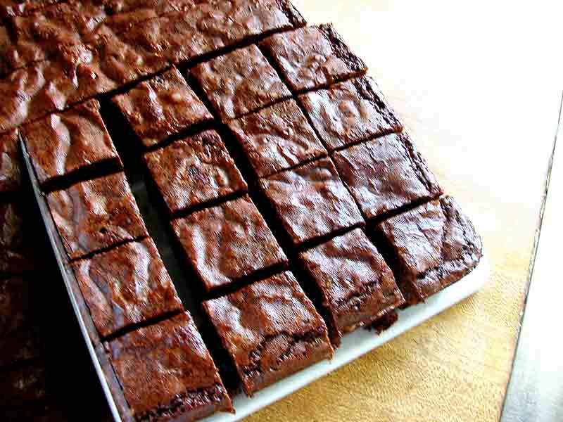

Brownie Recipe

“Brownies” by chotda, CC BY-NC-ND 2.0
Περιγραφή
Υλικά
- Βούτυρο 170γρ
- Κακάο 65γρ
- Βανίλια 1κγ
- Καστανή 350γρ
- Αυγά 3
- Αλεύρι γοχ 100γρ
- Αλάτι ½ κγ
- Κουβερτούρα Υγείας 100γρ
Βήματα
- Προθερμαίνουμε τον φούρνο στους 175 °C. Βουτυρώνουμε ένα βαθύ ταψί 20 x 20 cm και βάζουμε λαδόκολλα σε όλες τις πλευρές
- Βάζουμε το βούτυρο σε ένα κατσαρολάκι σε μέτρια φωτιά ανακατευοντας ανα τακτά χρονικά διαστήματα μέχρι να καστανίσει
- Προσθέτουμε στο βούτυρο το κακάο, την βανίλια και το αλάτι και ανακατεύουμε καλα
- Με ένα μιξερ ανακατεύουμε τα αυγά με την καστανή ζάχαρη μέχρι να αφρατέψουν και να μην νιώθουμε κόκκους ζάχαρης στο δάχτυλο
- Ανακατεύουμε να δύο μείγματα μεταξύ τους με μια σπάτουλα
- Προσθέτουμε το αλεύρι και ανακατεύουμε απαλα μεχρι να μην υπάρχει στεγνο αλεύρι
- Κόβουμε την κουβερτούρα σε ανόμοια κομματάκια και την ανακατεύουμε στο μείγμα
- Μεταφέρουμε το μειγμα στο ταψι και το ψήνουμε για 20-30 λεπτα στους 175 °C. Τσεκάρουμε αν έγινε με μια οδοντογλυφίδα η οποια στο πλαι πρεπει να βγαινει στεγνή αλλα στο κεντρο λιγο υγρή
Home